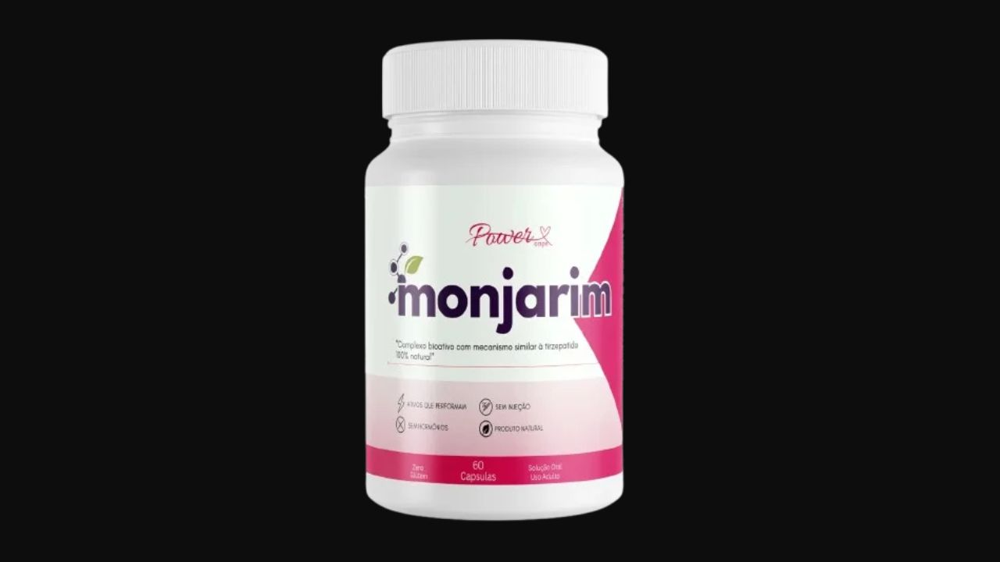

Analisamos cada ingrediente, pesquisamos os efeitos e reunimos o que você precisa saber antes de comprar o pó emagrecedor.

Monjarim é um suplemento em pó com 6 ingredientes naturais que atuam na saciedade, metabolismo, controle glicêmico e redução de inflamação. Garantia de 90 dias — a mais generosa do mercado.
Garantia incondicional de 90 dias · Frete grátis · Compra 100% segura
→ Acessar Site OficialMonjarim é um suplemento emagrecedor em pó com fórmula de 6 ingredientes naturais desenvolvida para atuar em três frentes simultâneas: queima de gordura, controle do apetite e redução da inflamação metabólica — que é um dos principais sabotadores invisíveis do emagrecimento.
Diferente de medicamentos injetáveis ou termogênicos agressivos, o Monjarim usa uma combinação de fibras, extratos vegetais e minerais para criar um ambiente metabólico favorável ao emagrecimento — sem estimulantes que causam ansiedade ou dependência.
A inflamação crônica de baixo grau impede o corpo de queimar gordura com eficiência. É silenciosa, quase imperceptível — e responsável por boa parte do peso que parece impossível de perder. O Monjarim atua diretamente nisso.
Fibra solúvel que se expande no estômago com a água, criando saciedade real e duradoura. Reduz picos de glicemia e melhora o funcionamento intestinal. Um dos ingredientes naturais mais bem documentados para controle do apetite.
A curcumina é um anti-inflamatório natural potente. Reduz a inflamação metabólica que sabota o emagrecimento, melhora a sensibilidade à insulina e auxilia no controle da gordura abdominal — a mais resistente e perigosa.
Fibra derivada de crustáceos que se liga às gorduras no trato digestivo antes que sejam absorvidas. Reduz a absorção de gordura e auxilia no controle do colesterol. Atenção: contraindicado para alérgicos a frutos do mar.
Termogênico clássico que acelera o metabolismo, aumenta o gasto energético em repouso e estimula a quebra de gordura. Também combate o cansaço e melhora a disposição para atividades físicas.
Extrato rico em antocianinas com ação específica na gordura abdominal e visceral. Auxilia na quebra de gordura localizada — especialmente a região do abdômen — e no controle do acúmulo de novas células gordurosas.
Mineral essencial que melhora a sensibilidade à insulina, estabiliza a glicemia e reduz a compulsão por açúcar e carboidratos. A deficiência de cromo está diretamente ligada à dificuldade de controlar o desejo por doce.
Monjarim contém Quitosana, derivada de crustáceos. Pessoas com alergia a camarão, caranguejo ou outros frutos do mar não devem usar. Consulte um médico antes de iniciar qualquer suplementação se você tem condições de saúde preexistentes.
Monjarim é um suplemento com composição séria. A combinação de Psyllium para saciedade, Cúrcuma para inflamação, Laranja Moro para gordura localizada, Cafeína para metabolismo e Cromo para controle glicêmico cobre as principais barreiras metabólicas para emagrecer.
Não é solução mágica. Mas como suporte para quem já está se movendo na direção certa, a fórmula tem base real para funcionar.
A garantia de 90 dias é o maior diferencial prático. São 3 meses para testar com segurança total — tempo suficiente para qualquer ingrediente mostrar resultado. Se não funcionar, o dinheiro volta. Esse é o tipo de confiança que poucos produtos oferecem.
Garantia incondicional de 90 dias · Frete grátis nos kits · Compra segura
→ Acessar Site Oficial